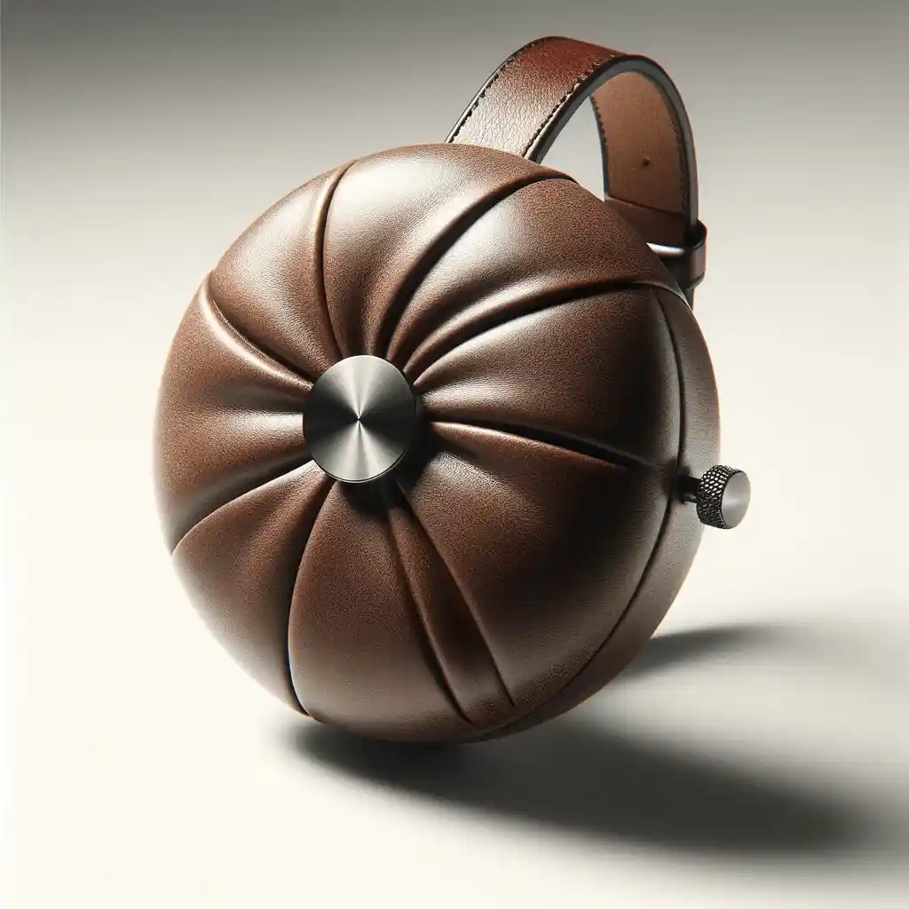

Sieci grzybni, czyli co naprawdę łączy drzewa w lesie
Podziemne strzępki grzybów oplatają korzenie drzew. Co wiemy o wymianie składników, a co jest nadinterpretacją.
W skrócie

~90%
roślin lądowych w symbiozie z grzybami
1997
pierwsza publikacja w Nature
2023
przegląd studzący interpretacje
izotopy
metoda śledzenia węgla
Czym jest mikoryza
Około 90 procent gatunków roślin lądowych żyje w symbiozie z grzybami. Strzępki grzybni oplatają korzeń albo wnikają do jego komórek, wielokrotnie zwiększając powierzchnię chłonną rośliny.
Roślina oddaje grzybowi cukry z fotosyntezy. W zamian dostaje fosfor, azot i wodę z obszaru, do którego jej własne korzenie nigdy by nie dotarły.
Skąd wziął się termin „wood wide web”
Określenie pojawiło się w komentarzu redakcyjnym czasopisma Nature w 1997 roku, przy okazji pracy Suzanne Simard o przepływie węgla między brzozą a daglezją znakowanym izotopami.
Eksperyment wykazał, że węgiel rzeczywiście wędruje między roślinami i że kierunek przepływu zależy od zacienienia. To był solidny wynik — problem zaczął się przy jego popularyzacji.
Co jest sporne
Przegląd literatury opublikowany w 2023 roku wykazał, że wiele często cytowanych twierdzeń — o ostrzeganiu sąsiadów przed szkodnikami czy o celowym karmieniu potomstwa — opiera się na niewielkiej liczbie badań, często prowadzonych w warunkach szklarniowych.
Autorzy nie podważają istnienia sieci mikoryzowych. Zwracają uwagę, że przepływ substancji nie musi oznaczać intencji ani współpracy: grzyb może po prostu gospodarować węglem we własnym interesie.
Jak to ująć uczciwie
Sieci grzybni istnieją, łączą korzenie wielu drzew naraz i przenoszą pierwiastki. To fakt dobrze udokumentowany.
Wnioski o lesie jako wspólnocie wymieniającej się dobrami wykraczają poza dane. Ostrożność nie odbiera zjawisku niczego — podziemna sieć wymiany między królestwami jest wystarczająco niezwykła bez dopisywania jej motywów.
Stan wiedzy w tabeli
| Twierdzenie | Status dowodów | Podstawa | Uwaga redakcji |
|---|---|---|---|
| Grzyby łączą korzenie wielu drzew | dobrze udokumentowane | badania terenowe i genetyczne | fakt bezsporny |
| Węgiel przepływa między roślinami | dobrze udokumentowane | znakowanie izotopami | kierunek zależy od zacienienia |
| Rośliny otrzymują fosfor i azot | dobrze udokumentowane | dziesiątki badań | podstawa symbiozy |
| Drzewa ostrzegają sąsiadów | słabe | nieliczne badania szklarniowe | wymaga powtórzeń |
| Drzewa karmią własne potomstwo | słabe | pojedyncze eksperymenty | interpretacja sporna |
| Las działa jak wspólnota | nieudowodnione | metafora popularyzatorska | wykracza poza dane |